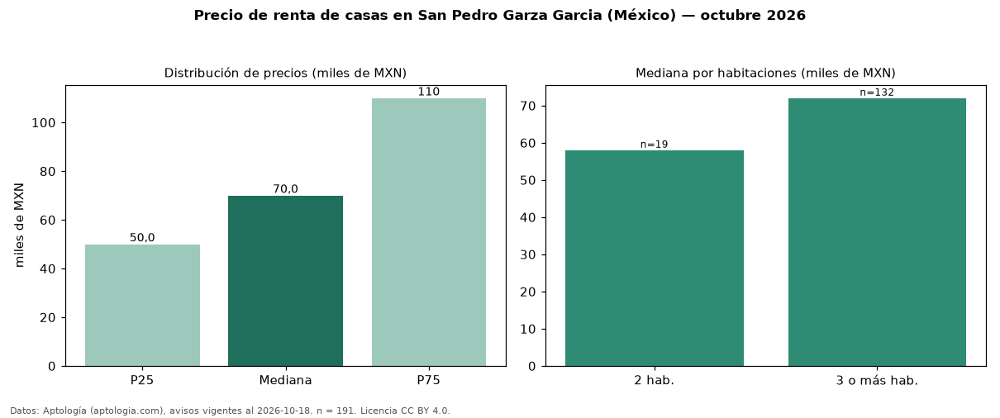

Precio de renta de casas en San Pedro Garza Garcia (México) — octubre 2026
Con 191 avisos vigentes, el canon mediano de casas en renta en San Pedro Garza Garcia (México) es MXN 70.000 al mes. Por metro cuadrado, la mediana es MXN 209/m² al mes (n = 146 avisos con área). Por precio mediano es la ciudad 2 de 5 de México con al menos 30 avisos de casas en renta (MXN). La mediana de toda la vivienda en renta de San Pedro Garza Garcia (MXN) es MXN 55.000; las casas quedan +27 %. El área mediana anunciada es 332 m². El segmento con más oferta es el de 3 o más habitaciones (132 avisos, mediana MXN 72.000); pasar de 2 habitaciones a 3 o más habitaciones cambia la mediana +24 %. La mitad central de los avisos va de MXN 50.000 a MXN 110.000 (razón 2,2), una dispersión alta. Datos: Aptología (aptologia.com), CC BY 4.0 — https://www.aptologia.com/. Archivos: PDF, CSV con las cifras y gráfica PNG.

| Avisos únicos | 191 |
|---|---|
| Percentil 25 | COP 50.000 |
| Mediana | COP 70.000 |
| Percentil 75 | COP 110.000 |
| Mediana por m² | COP 208 |
Fuente: avisos vigentes de portales inmobiliarios recopilados por Aptología, deduplicados (mínimo 30 avisos únicos por celda). Precios pedidos, no cerrados. Fecha: 2026-10-18.